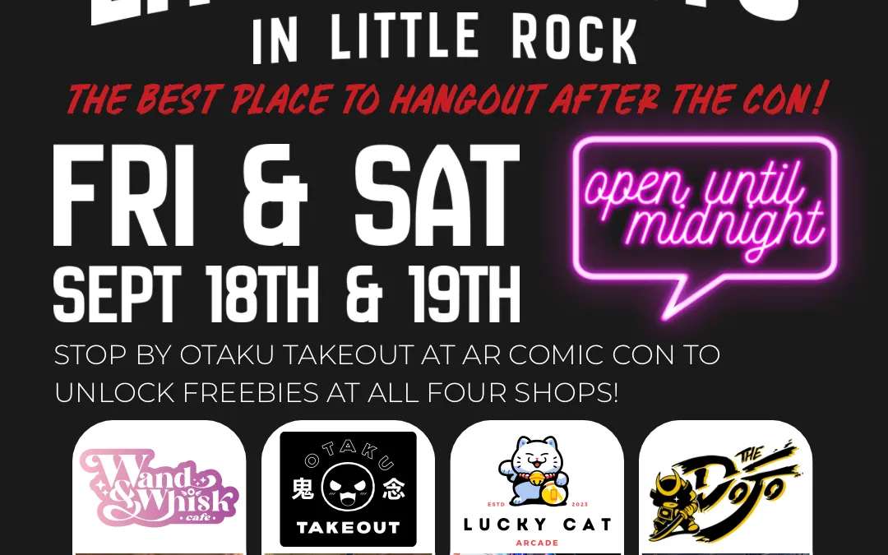
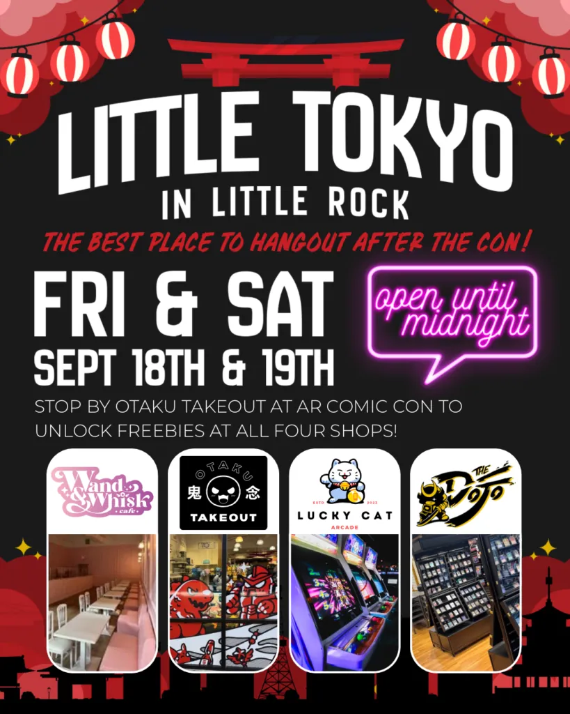
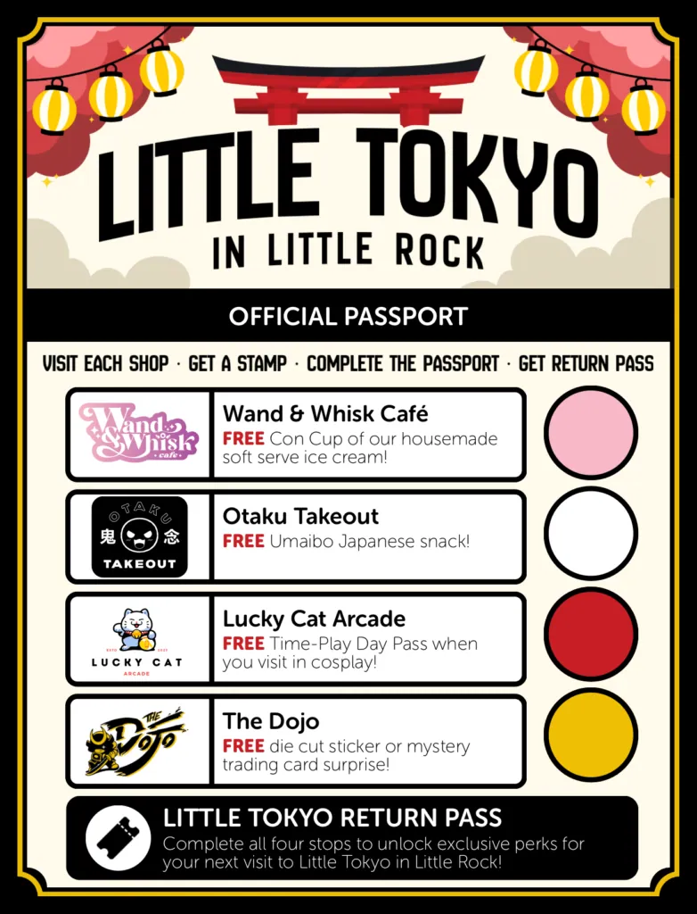
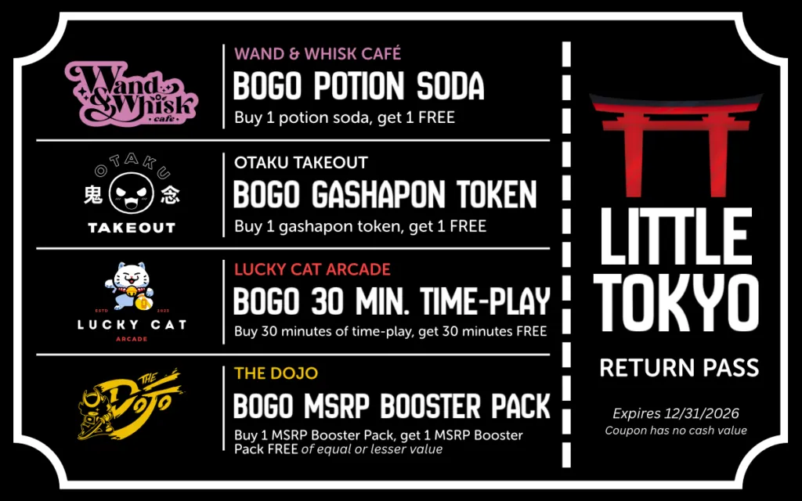
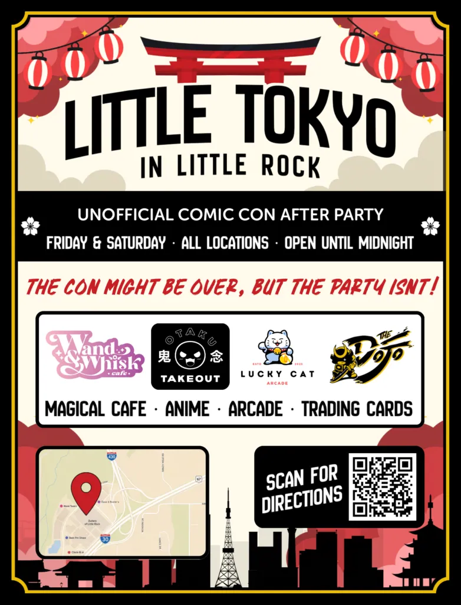

Arkansas Comic Con is one of my favorite weekends of the year. For three days, the Statehouse Convention Center fills with celebrity guests, artists, vendors, cosplay, gamers, collectors, and people who are enthusiastic about wonderfully specific things. Comics, anime, horror, gaming, trading cards, movies, cosplay, and obscure characters get their moment. Only six people in the building recognize them. It is a very good weekend to be a nerd in Little Rock, and the 2026 convention already gives us plenty to look forward to.[2]
There is just one problem. Arkansas Comic Con closes at 8:00 p.m. on Friday and 6:00 p.m. on Saturday.[1] Six o’clock feels awfully early for a Saturday night after Comic Con, especially after a full day of costumes, panels, gaming, shopping, autographs, and whatever fandom currently owns your soul. There is still an entire evening sitting there, and we have four shops full of people who would rather keep hanging out.
BTW, for those curious, the hours of Arkansas Comic Con 2026 are as follows:
- Friday, September 18: 3:00 p.m. to 8:00 p.m.
- Saturday, September 19: 10:00 a.m. to 6:00 p.m.
- Sunday, September 20: 11:00 a.m. to 5:00 p.m.
Arkansas Comic Con takes place at the Statehouse Convention Center, 101 E. Markham Street in downtown Little Rock.[1]
So we decided to keep the night going. On Friday, September 18 and Saturday, September 19, Wand & Whisk Café, Otaku Takeout, Lucky Cat Arcade, and The Dojo will stay open until midnight for the Little Tokyo in Little Rock Unofficial Arkansas Comic Con After Party. That gives everyone four extra hours on Friday and six on Saturday to grab dessert, play arcade games, sing karaoke, browse trading cards, hunt for gashapon, and spend a few more hours around people who understand why you bought that thing on the vendor floor. The whole event takes place together at the Outlets of Little Rock.
We are also putting together a free Little Tokyo Passport. Comic Con attendees can pick one up at the Otaku Takeout booth during the convention and bring it to Little Tokyo afterward. Each of the four businesses offers a free item or experience, and every stop earns a stamp. Complete all four stops, and you will receive a Little Tokyo Return Pass with another offer from every participating shop.

What Is the Arkansas Comic Con 2026 After Party?
The idea is pretty simple. Arkansas Comic Con already gathers many of the same communities we see around Little Tokyo every week, including anime fans, cosplay, gamers, collectors, TCG players, and people who can spend an alarming amount of time debating fictional characters. Once the convention closes, we want to give everyone somewhere nearby in Little Rock to continue the evening. Friday runs until midnight, and Saturday runs until midnight too.
This is an unofficial after-party organized by the four Little Tokyo businesses. There is no cover charge, no separate after-party ticket, and no requirement that every person in your group attended Comic Con. Friends, parents, partners, and anyone else can meet up at the Outlets and join the evening. Comic Con attendees simply get the added benefit of the Passport promotion if they picked one up at the Otaku Takeout booth.
The atmosphere is meant to stay casual. People can come directly from the Statehouse Convention Center, stop somewhere for dinner first, change clothes, keep the cosplay on, or show up later in the evening. Wand & Whisk will have dessert, Otaku Takeout will have imported snacks and collectibles, Lucky Cat will have arcade games and karaoke, and The Dojo will have trading cards and gaming. Nobody needs an itinerary to enjoy it.
What Is Little Tokyo in Little Rock?
Little Tokyo grew out of four neighboring businesses at the Outlets of Little Rock. Wand & Whisk Café, Otaku Takeout, Lucky Cat Arcade, and The Dojo each do something different, yet the same people have a habit of wandering through all four. Someone comes for ice cream and ends up playing arcade games. Someone comes for Pokémon cards and walks out carrying Japanese snacks and a gashapon capsule too. If this is your first visit, our guide to spending a day at Little Rock’s Little Tokyo gives you a better idea of how the four stops fit together.
You can browse our full Wand & Whisk menu before Comic Con weekend if you want to see what else we will be serving. Otaku Takeout focuses on Japanese pop culture, imported snacks, collectibles, and gashapon. Lucky Cat Arcade brings in Japanese-style arcade games, UFO catchers, prize games, and private karaoke rooms, while The Dojo gives local TCG players a place for Pokémon, Magic: The Gathering, One Piece Card Game, and plenty of other games.
Comic Con weekend gives us a chance to put all of that together. The four businesses sit in the same area, so the after party does not require driving from one activity to another all night. Park once, wander between the shops, meet back up with friends, and decide what sounds good next. The Outlets of Little Rock are located at 11201 Bass Pro Parkway, and the center normally lists Friday and Saturday hours through 9:00 p.m., with individual tenant hours varying.[3] Our four participating businesses will stay open until midnight for the after-party.
How Does the Little Tokyo Passport Work?
The Passport starts at Arkansas Comic Con. Stop by the Otaku Takeout booth during the convention and pick one up for free. Once Comic Con ends for the day, bring the Passport to Little Tokyo and visit the four participating businesses. Each location has a complimentary reward waiting for Passport holders and a stamp to mark the stop complete.
There is no required order. Start with dessert, start with the arcade, start with cards, or start wherever the group happens to wander first. The goal is simply to collect all four stamps while exploring the businesses. Once the Passport is complete, you will receive a Little Tokyo Return Pass with four BOGO offers that can be used on later visits.

Wand & Whisk Café: Free Con Cup of Housemade Soft Serve
I am obviously biased toward this stop. Wand & Whisk is our Japanese-inspired dessert café, and Comic Con weekend gives us an excellent excuse to fill the place with cosplay until midnight. Our Passport reward is a free Con Cup of housemade soft serve ice cream. If the fish-shaped waffle cones around the café are new to you, our Guild Master’s Guide to Taiyaki explains what they are and why they show up on our menu. After several hours walking through a convention center in September, especially in a costume involving foam armor, synthetic hair, or several mysterious layers of fabric, cold ice cream seems like a very good idea.
Cosplay is absolutely welcome in the café. I fully expect to see superheroes, anime villains, elves, Pokémon trainers, video game characters, and several costumes I will have to embarrass myself by asking someone to identify. Grab the Con Cup, sit down for a while, compare purchases, and recover before heading to the next stop. Anyone arriving considerably hungrier can also go for something like our Royal Souffle Stack, while the Choco Wand Crepe is there for anyone who wants to commit fully to chocolate. We will keep serving until midnight on both Friday and Saturday.
Otaku Takeout: Free Umaibo Japanese Snack
Otaku Takeout is where the Passport begins. Their booth at Arkansas Comic Con will have the free Passports, which makes them your first official stop even before you arrive at Little Tokyo. Once you reach the Outlets, bring the Passport into the store for a free Umaibo Japanese snack. It is a small reward, though anyone who already loves Japanese snacks knows how quickly “I’ll just try one” can turn into an entire bag of things you cannot pronounce.
The store itself is built for browsing. Otaku Takeout carries Japanese pop-culture merchandise, imported snacks, collectibles, and gashapon, so anyone who somehow leaves the Comic Con vendor floor feeling under-shopped still has options. The gashapon machines also become important again after the Passport is completed. There is a BOGO token offer waiting on the Return Pass.
Lucky Cat Arcade: Free Time-Play Day Pass in Cosplay
Some evenings eventually need an arcade. Lucky Cat Arcade is a Japanese-style arcade with time-play games, UFO catchers, prize games, and private karaoke rooms. Passport holders who visit in cosplay can receive a free Time-Play Day Pass. That gives anyone who spent hours putting together a costume one more reason to keep it on after the convention closes.
I am hoping people take advantage of that. There is something deeply entertaining about watching someone dressed as an apocalyptic warrior become emotionally invested in a claw machine. The private karaoke rooms also feel appropriate after a full day surrounded by anime fans. Someone will eventually decide that the group needs to hear an opening theme performed at full volume, and Lucky Cat has kindly provided a room where that decision can play out.
The Dojo: Free Promotional Surprise
Trading cards fit naturally into the weekend. The Dojo serves local players and collectors across games such as Pokémon, Magic: The Gathering, One Piece Card Game, and other TCGs. Passport holders can receive a free promotional item, such as a die-cut sticker or a mystery trading-card surprise. The exact promotional item may vary, which seems appropriate for a shop where opening something unknown is already part of the fun.
The Dojo also gives people somewhere to slow down. After hours of walking around Comic Con, sitting at a table with friends and opening a few packs sounds pretty comfortable. One person can talk decks, another can browse sealed product, and somebody else can quietly resent whoever just pulled the card everyone wanted. That is a respectable way to spend part of Saturday night.
What Happens When You Complete the Little Tokyo Passport?
Four stamps complete the Passport. Once you have visited Wand & Whisk Café, Otaku Takeout, Lucky Cat Arcade, and The Dojo, you will receive a Little Tokyo Return Pass. We wanted Comic Con weekend to introduce people to the businesses, and the Return Pass gives everyone a reason to come back after the convention has packed up for the year. Each offer can be redeemed separately on a future visit.
The Return Pass includes one BOGO offer from every participating business:
- Wand & Whisk Café: Buy one Potion Soda, get one free.
- Otaku Takeout: Buy one gashapon token, get one free.
- Lucky Cat Arcade: Buy 30 minutes of time-play, get 30 minutes free.
- The Dojo: Buy one MSRP booster pack, get one free.

You do not have to redeem everything on the same day. Come back for Potion Sodas with a friend, save the arcade offer for another weekend, use the booster-pack deal when a new set catches your attention, and return to the gashapon machine that defeated you the first time. The four offers give you four different excuses to spend another day around Little Tokyo.
What Can You Do After Arkansas Comic Con in Little Rock?
Saturday gives everyone a lot of evening. Arkansas Comic Con closes at 6:00 p.m., while the four Little Tokyo businesses will remain open until midnight.[1] That gives people six hours to decide what they still have the energy to do. Some will want to sit down with dessert, while others will head straight to the arcade, the karaoke rooms, the trading cards, or another round of shopping.
Friday gives us four hours after the convention closes. Comic Con runs until 8:00 p.m. that night, and Little Tokyo will again stay open until midnight.[1] There is enough time to leave downtown, grab dinner if you need it, drop off purchases at the hotel, and still make it to the Passport stops. Anyone whose feet need twenty minutes to remember what blood circulation feels like can take that time too.
The after party also gives groups some flexibility. One person might spend the day at Comic Con while another has work, family plans, or no convention ticket. They can still meet at Little Tokyo afterward and enjoy the evening together. The shops are open to everyone, so the after party can become the point where the entire group reconnects.
Can You Come to the Arkansas Comic Con After Party in Cosplay?
Please do. Arkansas Comic Con features cosplay guests, a costume contest, and plenty of people in costume throughout the weekend.[2] We would love to see some of that energy make its way to Little Tokyo once the convention floor closes. Lucky Cat’s Passport reward even gives visitors in cosplay a free Time-Play Day Pass.
Keep the costume on for as long as you feel like wearing it. Take photos, grab some soft serve, sing karaoke, chase a plushie through a UFO catcher, or open cards while dressed as someone who would have no earthly reason to understand Magic: The Gathering. Nobody at Little Tokyo is going to find that strange. We have seen stranger things on ordinary weekends.
Do You Have to Attend Arkansas Comic Con?
No Comic Con ticket is required for the after party. The Little Tokyo shops are open to everyone during the extended Friday and Saturday hours, so friends and family can join even if they never entered the convention. The Passport is aimed at Comic Con attendees, as it will be available from the Otaku Takeout booth at the event. Anyone can still come enjoy the shops, arcade, karaoke, desserts, and gaming.
That distinction should make planning easier. Parents can meet up with kids after the convention, friends can join once they get off work, and groups can include people who had completely different plans during the day. The late hours are there for everyone who wants somewhere to spend the evening. Comic Con simply gives us a very good reason to stay awake.

Where Is the Arkansas Comic Con 2026 After Party?
The after party takes place at the Outlets of Little Rock. The address is 11201 Bass Pro Parkway, Little Rock, Arkansas 72210.[3] Wand & Whisk Café, Otaku Takeout, Lucky Cat Arcade, and The Dojo are all located together in the Little Tokyo area of the Outlets. Once you arrive, you can park and move between the four stops on foot.
The setup is one of my favorite parts of the event. There is no need to spend the night driving across Little Rock to complete the Passport. Someone can wander into the arcade while somebody else looks at cards, and everyone can regroup over dessert later. If half the group disappears, there are only a handful of likely places they went.
Quick Recap: How the Arkansas Comic Con 2026 After Party Works
There is a lot going on, so here is the short version. Our unofficial Little Tokyo after-party takes place on Friday and Saturday nights, and all four participating shops stay open until midnight. You do not need to attend Arkansas Comic Con to come hang out with us. The Passport is simply an extra promotion for Comic Con attendees who pick one up at the Otaku Takeout booth.
- If you are at Arkansas Comic Con, pick up a free Little Tokyo Passport. Stop by the Otaku Takeout booth inside the convention. Anyone can attend the after party, but the Passport is the key to the free rewards.
- Come to Little Tokyo Friday or Saturday night. Wand & Whisk Café, Otaku Takeout, Lucky Cat Arcade, and The Dojo at the Outlets of Little Rock will stay open until midnight.
- Visit all four Little Tokyo businesses. Passport holders collect a free reward and a stamp at each stop while everyone is free to eat, shop, play arcade games, sing karaoke, browse cards, and hang out.
- Complete the Passport and get a Return Pass. Four stamps unlock the Little Tokyo Return Pass, which includes a future BOGO offer from each participating business.
That is the whole quest. Comic Con attendees can bring the Passport along for the freebies, and everyone else can simply come join the after party. Friday gives us until midnight, and Saturday gives us six whole hours after Comic Con closes to keep the weekend moving. We will have the soft serve ready.
Gratefully yours,
-Marc
References
[1] Arkansas Comic Con. Event Guide. 2026. ArkansasComicCon.com.
[2] Arkansas Comic Con. Tickets / Event Information. 2026. ArkansasComicCon.com.
[3] Outlets of Little Rock. Hours & Location. 2026. OutletsofLittleRock.com.
Filed under Arkansas Comicon · Tagged Arkansas Comicon